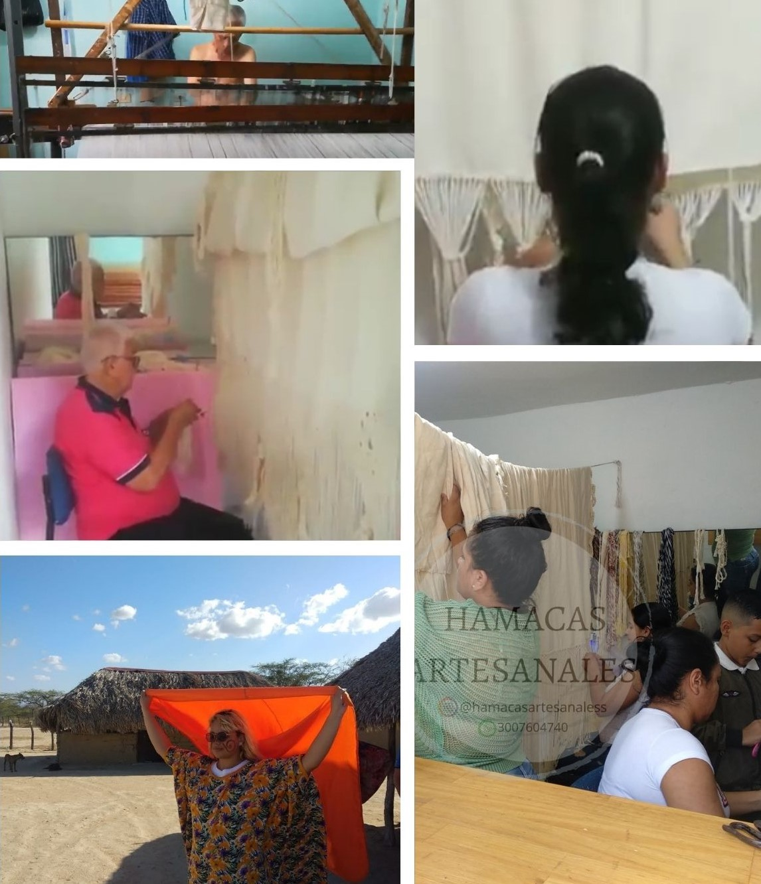

Somos un equipo
Trabajando con las manos llenas de amor
Hamacas artesanales es un emprendimiento que nace de forma familiar, se desarrolla gracias a los conocimientos ancestrales que heredamos de losindígenas y las comunidades que trabajan desde sus casas para hacer llegar a sus hogares piezas preciosas.
